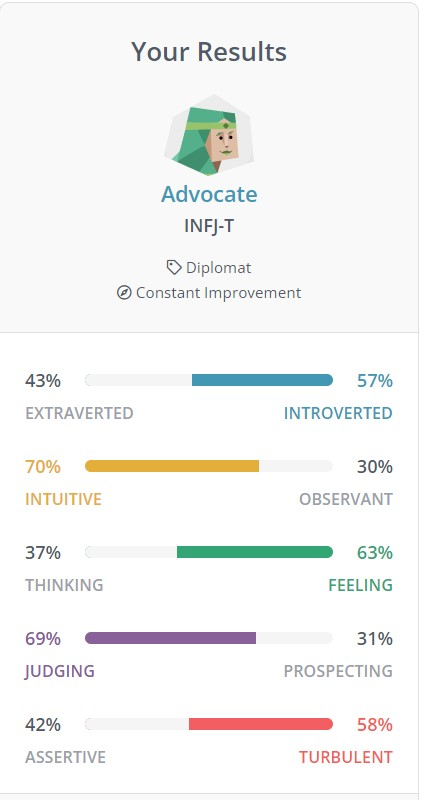

COSC2196 Introduction to Information Technology
Ashley Stanley
Flash back to the early 90, internet was in its infancy. My dad had a friend that was into these computer things. The friend would play around with them, pull them apart, build them. My dad always had an interest and his friend offered to put something together for him to learn and play around with. Looking back it definitely wasn’t anything special, noisy fans in a striking cream box, but the most memorable thing was the monitor. It was 2 colours, black and green, ran on DOS without a GUI and only a command prompt. I always found it compelling and would always wonder how it worked, how did typing on the keyboard invoke a response on the screen and once I began to learn a little bit I became hooked with computers and technology. The next iteration received a windows 3.1 upgrade accompanied with a colour monitor, I was mind blown. The system got a few basic upgrades but I starkly remember the computer being so lacking that to even load up something like the original Duke Nukem the system needed to be restarted in DOS prompt to muster enough resources for the application to load. Through the years we got new computers and the versions of everything slowly updated. I eventually was able to save up via some casual work and purchase my own computer with a TNT2 GPU and later upgraded to a voodoo 5, as a teenager I was an envy of others when you rocked up to a LAN party with a voodoo 5 equipped system. Lots of fond memories and sleepless nights.
Through the years we got new computers and the versions of everything slowly updated. I eventually was able to save up via some casual work and purchase my own computer with a TNT2 GPU and later upgraded to a voodoo 5, as a teenager I was an envy of others when you rocked up to a LAN party with a voodoo 5 equipped system. Lots of fond memories and sleepless nights.
Technology was always a big part of my growing up, but at some point I changed, pressures of being old enough to party and starting a family I moved away from computer technology and moved my interest elsewhere. It wasn’t till about 9 or so years ago when an old friend was upgrading their system and they gave me their old gaming PC. I got hooked again, pulled it apart upgraded it, gutted the case and re-envisioned it several times over. From then computers and tech have become a source of enjoyment. Many years ago I would play around with building website basics, but the interests moved from not just PC’s but to things like camera and phones. And all the while needing to know how everything worked on the inside and behinds the scene.
I fell into a work grove and began getting management opportunities so any thought of an IT career seemed like a different life direction and that I believed I couldn’t be capable of being successful like all the people I knew or heard about. But why cant I was an epiphany of just recently, my kids are older and growing, and my work is stale. I still need to work for another 30 years of my life, I would prefer doing this than my Management job. I did some self learning and now enrolled in university for the first time in my life. I can do this.
Why was RMIT my choice of learning, the flexibility . Being capable of learning completely at my home around the life pressures of work and family in an environment I can choose the time to study. The world has changed a lot with how we do things and the changes to how people learn has sparked a confidence that I can achieve something I could not have with traditional learning.
Pulling all my personal knowledge of IT and choosing to learn of my own accord is a fun way to discover things, when trying to find a direction and learn what the industry is doing. Self learning leaves a lot of gaps in really knowing what the industry direction is. What am I looking to get out of this degree is simple an all encompassing overall understanding of all facets that drive the IT industries. Where I specialize in I am not sure, but the more I learn the more intriguing I find subjects and topics, but it is also a way for me to work out what I am most good at, I am enjoying programming, I enjoy the hardware aspects, IT management roles. So many opportunities, I am excited to see what sparks me.
Personality Profile
16 Personalities
Based on the 16 Personalities Profile test the results show the following results:
57% Introverted, 70% Intuitive, 63% Feeling, 69% Judging and 58% Turbulent.
Digging into these results the data showed an overall profile type that fits the description of an Advocate. Advocates are described by 16 Personalities as passionate and enigmatic, Advocate types stand out for imagination, compassion, integrity and strong principles. Idealistic types are individuals capable of turning ideals into plans and executing them. Strengths include being creative, insightful, principled, passionate and altruistic.
Advocate types can find challenging navigating interpersonal conflicts, confronting unpleasant facets, pursuing self-realization or finding a fulfilling career path leaving the individual questioning who they really are. Some weaknesses include sensitivity to criticism, reluctant to open up, perfectionist, always chasing something grander and can be prone to burnout because of these.
Advocate types want to find meaning to their work which can make it difficult to choose fulfilling career paths. Advocates desire to help and connect can make roles as psychologists, teachers, social workers or health care fulfilling.

What is your Learning Style?
EducationPlanner.org
According to the self assessment from educationplanner.org, the profile assessment is as follows:
30% auditory, 50% visual and 20% tactile.
Visual learning styles derive success my studying pictures or reading and understand things by sight. Visual learning visualize outcomes in their head and like to see what they are learning.
Creativity Quiz
Based on the Mind Tools creativity test and scoring the results interpret a score of 60 out of a possible 80. Mind tools categorizes this result as a highly creative individual. It describes creative people as finding problems, and doesn’t allow problems to surface and preempt and redirects for planning and resolution before they come to light. Gathering and reflecting information, as well as generating and evaluating ideas in assisting with planning and problem solving.
What do these results mean for me?
Based on the results displayed I can definitely agree with a lot of the traits 16 personalities identified and how they align with my personal review. Based on personal life experiences I did at one stage contemplate a career in counselling or phycology but found I would be more prone to mental burn out from personally carrying burdens. Due to my creative natures my desire to learn, plan and implement my current choices of career and prospect career paths align with these desires and traits.
Based on my personal experience thew learning style assessment from education planner.org assesses quite accurately and describes the way I learn and process information visualizing. Auditory is a secondary but even when directions are verbalized I find myself converting the verbal queues and imagining them visually to process information. And the creativity test from MindTools seems to align to my experiences and how I problem solve and think creatively, I generally plan for the worse case scenario aim to process through problems and generate solutions timely before problems arise but still capable to think quick and put out fires as they start.
Influencing behavior in a team and consideration when forming groups
When reviewing these results and referring to my current job path. Being a leader, collaborator and problem solver in my current work role in management helps me be versatile with different groups and types of people. I can take charge, equally input and listen and compromise and collaborate to be an asset in decision making in a team environment. The results more accurately reflect my characteristics and reality better than I believed the outcomes I expected. I think when forming a team these results assist in team forming more an understanding of different profiles and understanding how to all work together to reach outcomes and amicable resolution.
Project Idea
Accessibility to information in the modern world has never been easier. We have mobile phones where we can store mobile numbers, google to research any topic or potential services. Most people in the modern world find these tasks of navigating information and services simple and easy on the internet. But for some this task of searching for services is not quite as easy for some as it is for other.
My Project idea was stirred on because of an elderly relative, who has been shown before, but still remains scared off contacting a business or services so instead becomes flustered and avoids the situation all because they don’t trust the information is correct or even how to find what they are looking for. But not only for elderly, the concept would be beneficial to children who are just starting to understand technology and for people travelling abroad in places they are not familiar.
My idea is a location based phone book as a simple description. A phone app or website that uses location services to provide the best contacts for business’ and services depending on specific locations. For example, if an elderly person was visiting a friend in a different town and needed to contact the police station. Not an emergency situation but potentially to report something, once familiar with the app they can open the app and just select police station and it will call the police station closest to their current location. Or if travelling abroad and an incident occurs and they need to find the closest medical centre. The app can provide specific information about address and specific contact number to the service closest toy where you are.
One article from PRNewswire a survey of 2,700 people aged 55 and over surveyed worldwide via telephone indicated that of the participants, 42% use the internet regular, 31% occasionally and 27% never. Then asked a series of questions the reasons why respondents do not use the internet, 59% said they do not need it, 42% said it was too complicated, 37% rely on family and friends if they need to do something online, 36% feel too old and 15% just flat out reject the internet. And all the while of these respondents 27% live by themselves alone.
Aging in place website said from a recent study from the Pew Research Centre found amongst seniors 65 and over, 85% own cell phones with 46% regularly using smartphones.
How would an App like this look and how would it function. It needs to be simple and bold, especially if it has a specific target audience may be the elderly with the viability of additional uses like travel accessibility or children with simple technology understanding, but with its primary function being a locations based service capable of retrieving current location information itemised down to services specific you where you are at the time.
The visualisation of how users would navigate the App would be more around categories, ie a selectable button with emergency services that list the likes of police station, fire station, medical centres, hospital but also emergency numbers as the vary from country to country. Other categories for example could be food that pulls local data, imagine ordering a pizza from well know pizza chain and the specific number for the local comes up. The possibilities are endless but it needs to figure out how to filter out as not to overwhelm with too many possibilities and potentially just display the most relevant and reputable services. Databasing limitless business would be time consuming and near impossible and may require some kind of machine learning to track through postcodes via the internet and retrieve and store the information data and recall information this way.
Another potential option could be to ability to itemise services via proximity from a service like google maps etc, which would potentially still require some sophisticated technology to read, sort, rate services. This option would seem more viable as when services details change the data displayed would correlate and display up to date information.
What kind of tools and technology would be required to create an app like this? Well the phone would definitely need to have a GPS module and assisted GPS to articulate locations as well as cellular ID. Geofencing technologies for the app to create virtual boundaries, the geofencing technique is employed by companies like uber. And one of the most important technologies being the likes of Google maps and ‘Places API’ where the app can pull data based on geolocations.
As for programming languages Java, Swift, Kotlin, Python. And development software the likes of appypie, skuid, linx.
Naturally the skills required to execute the development of a sophisticated app like this that would rely on geolocation would need firm understanding of programming in choice programming languages and the ability to integrate the services allowing the functionality of geolocation services. The ability to execute an app would be a venture requiring a team with varying skills and knowledge to draw the capability to pull the project together and viably something for a bigger organisation to accomplish.
If a project of this magnitude was achievable the difference it may make may only be to a small demographic that is unable to navigate the likes of search engines or even out of convenience, but like everything in IT it’s a numbers game. When there is an app that has worldwide relevance the proportion of the population that would find this service useful could be millions and would need continuous upkeep and development to keep up to date and remain relevant.
https://aginginplace.org/cellphone-guide-for-seniors/#:~:text=A%20recent%20study%20from%20the,are%20quickly%20embracing%20digital%20life.
https://www.prnewswire.com/news-releases/many-of-the-worlds-elderly-avoid-the-internet-due-to-lack-of-support-301484689.html
Ideal Job
Full Stack Development Specialist. What is full stack? A full stack developer is a technologies expert and a jack of all trades and specialising in web development, they can handle all the work of system engineering, servers, databases and client services. So essentially someone who can work on the back end, the front end and client side, they know how each layer functions and can manipulate all the backend components.
Full stack developers are highly valued by small start ups and large companies alike and have a broad set of skills and extensive knowledge of the server side and client side of the development process.
Skills necessary to be a successful full stack developer are front end languages like HTML, CSS, Java script. Backend languages like PHP, python, ruby and java. Understand the web architecture to create complex software applications. Data base storage etc. There can be years of experience required to become successful and understand all facets required to be competent in the full stack role.
Where do I fit into this ideal role at this stage? The skills I can bring to this role at currently is quite limited. Besides some small experience with HTML, python and java I have a lot to learn. The concept of an ideal job is a great way of understanding the needs required to fulfill the roles expectations. Although I have a lot to learn in the prospects of becoming a full stack engineering specialist it helps steer me towards the technologies I need to understand and continue my development needed.
Ultimately the move into Information Technology can be bold and daunting. Coming from a background of IT for fun and interest I have a lot of developmental gaps and I am starting to identify the needs for development. Ideally where to I start? Well, this Bachelor of IT. This is designed to give me a catchup of all current IT arenas and broadly the technologies implemented within the industry. Following this I would be interested in dialled down courses that may narrow down the key technologies and web architectures needed to be successful in this type of role. From there ideally gain work within the IT industry and use this as an on the job tool for learning and development.
Job Advertisement
https://www.seek.com.au/job/56162379?type=standard#sol=d992743d438bf36050b2fcd3ccd3baf911b724d6